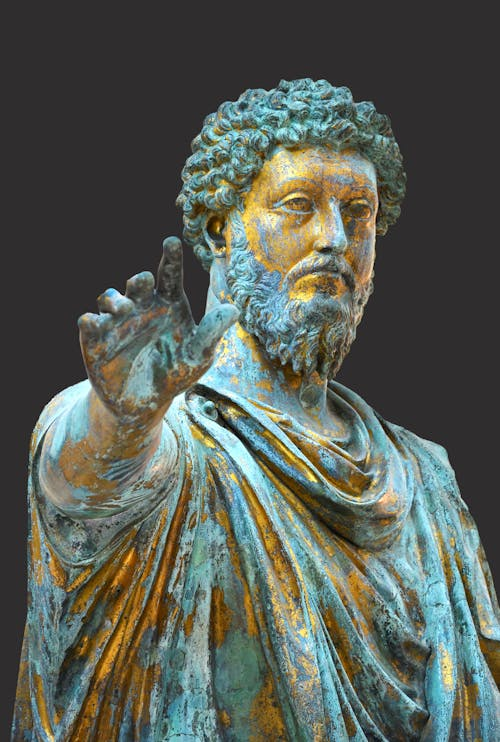

Tenés la lista. Pintar la pared del living. Sellar esa maldita tapa de luz. Retomar el gimnasio. Vaciar el placard del galpón. Y por supuesto, ese gran proyecto que te quita el sueño. La lista es enorme, y la sentís como una montaña imposible de escalar. Cada día que pasa, la montaña crece, y tu energía se encoge.
¿Te suena familiar? Es la trampa perfecta de la mente moderna: el "análisis por parálisis". Pensamos tanto en el "todo" que no hacemos "nada".
"Donde te centrás, se expande."
Esta no es una frase de autoayuda barata. Es una ley de la física mental. Tu cerebro está programado por defecto para centrarse en lo que falta, en la lista interminable, en la distancia hasta la cima de la montaña. Es un mecanismo de supervivencia que hoy se ha convertido en una forma de autosabotaje.
Si tu foco está en "todo lo que me falta por hacer", tu realidad se expandirá en una sensación de agobio y fracaso. Pero, ¿y si hackeamos el sistema? ¿Y si obligamos a nuestro cerebro a centrarse en lo que SÍ hicimos?
El Arma Secreta: El Diario de Victorias
 Esta es la herramienta más simple y potente que vas a encontrar. No requiere apps, ni suscripciones, ni gurús. Solo una libreta y 3 minutos antes de dormir. Como las "Meditaciones" de Marco Aurelio, pero para tus batallas diarias.
Cómo funciona:
Cada noche, sin excusas, anotá 3 micro-triunfos del día. La clave está en la palabra "micro". No buscamos hazañas épicas. Buscamos evidencia.
- ¿Retomaste el gimnasio e hiciste 15 minutos de bici? Es una victoria. Anotala.
- ¿Pintaste esa pared que odiabas? Es una victoria. Anotala.
- ¿Finalmente sellaste esa tapa de luz? Es una victoria. Anotala.
- ¿Leíste 5 páginas de un libro? Es una victoria. Anotala.
Al principio te va a parecer una tontería. Pero después de una semana, tendrás una lista de 21 victorias. En un mes, más de 90. Estás construyendo un arsenal de pruebas irrefutables de que SÍ estás avanzando. Le estás dando a tu cerebro nueva información, un nuevo foco. Y donde te centrás, se expande.
Del Diario a tu Entorno: El Templo del Guerrero
Esta filosofía no se queda en el papel. Se extiende a tu entorno. Tu casa no es solo una casa; es tu campo de entrenamiento, tu santuario. Cada vez que ordenás, que sacás cosas viejas, que vaciás ese placard, no estás haciendo una tarea doméstica. Estás despejando tu mente. Estás creando espacio físico para que las nuevas ideas puedan respirar.
Dejá de esperar el gran golpe de motivación. No va a llegar. La motivación no es la causa de la acción, es la consecuencia. Se alimenta de pequeños logros diarios.
Empezá esta noche. Agarrá una libreta y encontrá tus 3 victorias de hoy. Por más pequeñas que sean. Ese es el primer paso. El único que importa.